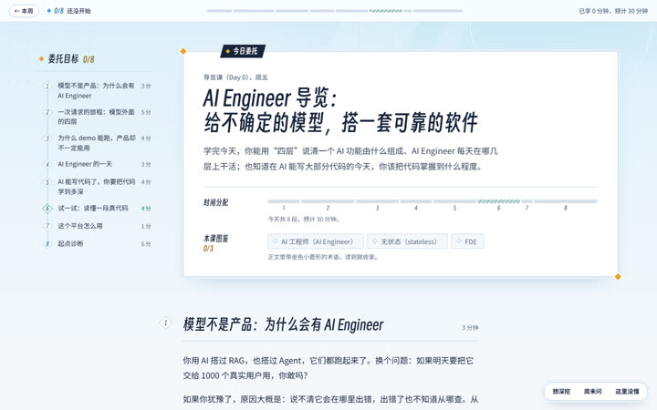
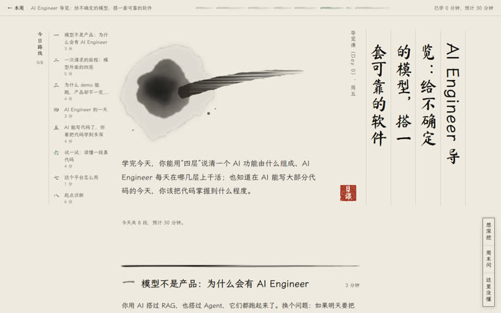
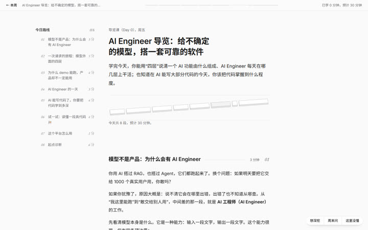

每门课按学科选一个主题，在开新主题时决定。下面三个样例页都是同一节 Day 0，交互组件和配音动画按各自的画法重画过；在这里答题、打卡不会算进学习记录。

适合：工程、编程、工具类。
现代二次元游戏的 UI 语言：侧边的委托目标读完一段勾一项，术语收进本课图鉴，小测是挑战，打卡是委托完成。

适合：文科，如历史、文学、哲学、艺术、语言。
宣纸、墨分五色、竖排书法题头和朱砂印。小测像老师批改：答对画圈，答错朱笔划掉。

适合：数学、金融、物理、理论类。
安静的技术图谱，力气花在等轴测"机器"图上：零件随操作移动，读数来自同一个模型。